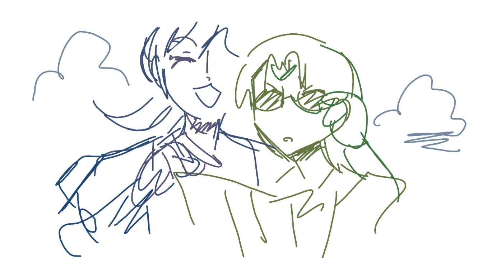

This map is designed to keep track of the fictional story locations used in Enstars stories, by placing them as close to their real-life equivalents as possible; this map does not cover Okinawa's cities, features, and geography broadly. Use the links below to learn more about the real places these locations may be based off.
Based on story details, walking distances, and Kuro's motion sickness capabilities, this map scales the distances between locations down to about 10% the size of real-world Okinawa. Location placements are not necessarily 1:1, and are instead estimations or compromises.
I am not from Okinawa. As these are educated guesses, I welcome feedback through email or inbox in how to improve it.
